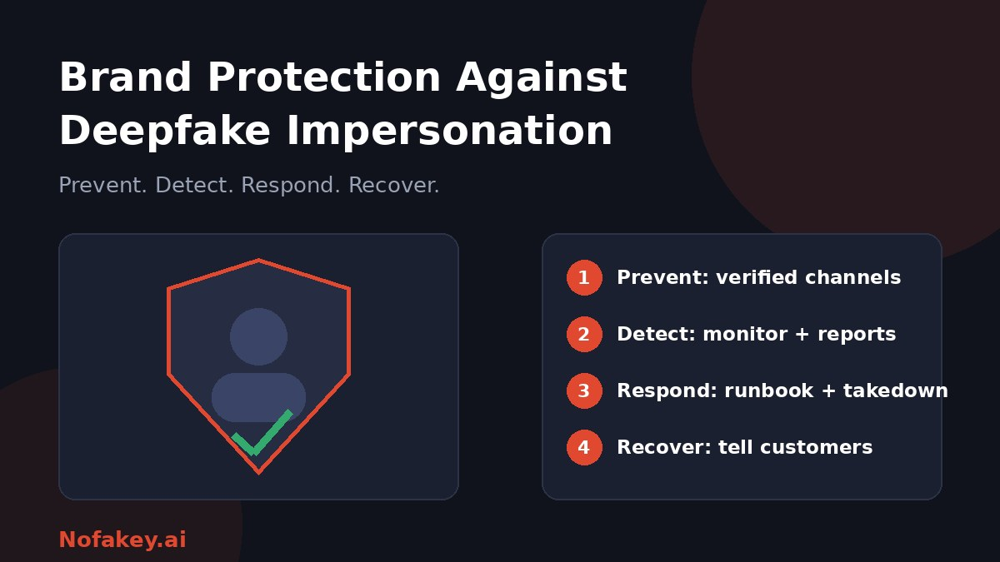

A video appears showing your CEO promoting an investment scheme. A "support agent" with your brand's voice calls customers asking for card details. A cloned voice instructs finance to pay a new supplier. None of it is real, but your customers, staff and partners may believe it. This guide gives brands a practical playbook for deepfake impersonation: how to prepare, how to spot it and how to respond.
The main deepfake threats to a brand
| Threat | What it looks like | Who is harmed |
|---|---|---|
| Executive impersonation | Fake video or voice of a leader endorsing a scheme or giving instructions | Customers, staff, investors |
| Fake endorsements and ads | Ambassadors, founders or experts seemingly promoting a product or giveaway | Customers and the person impersonated |
| Fake support lines and chats | Cloned brand voice or avatar collects data or payments | Customers |
| Internal payment and data fraud | Fake "boss" or supplier on a call or voice note requests a transfer or credentials | Your finance and operations teams |
| Counterfeit promotion | Synthetic demos or reviews selling knock-offs under your name | Customers and your sales |
| Misinformation | Fake clip of a spokesperson saying something damaging | Your reputation |
Many of these attacks do not need a perfect fake. They need one that is convincing enough in the moment someone is rushed or worried. For the basics of how deepfakes work, see what a deepfake is and how to protect yourself.
Stage 1: Prevent
Publish a verified-channels page
List your official websites, social accounts, phone numbers, support channels and ad accounts in one place, and keep it current. When customers see a suspicious video or call, they can check it against this page. Link to it from your website footer, support pages and social profiles.
Set clear rules for what you will never ask
- State publicly that you will not ask for passwords, codes or full card numbers by phone, video or message.
- State how you contact customers about refunds, prizes and account problems.
- Tell partners and suppliers how payment and bank-detail changes are confirmed.
Reduce what attackers can use
- Review executive exposure. Long, clear video and audio of leaders make cloning easier. You do not need to hide them, but be aware of what is out there.
- Think before publishing staff voices, org charts and call recordings that are not needed.
- Add provenance to your own media where practical, such as content credentials or visible labels, so genuine content is easier to prove. See how to label AI-generated content for transparency on your own AI use.
Lock down internal processes
- Dual approval and call-back for payments, new payees and bank-detail changes, whoever asks and however urgent.
- No decisions on a single channel. Verify requests for money, data or access on a second, known channel.
- A safe word or challenge question for executives and finance staff in sensitive situations.
- Train staff with realistic examples, and make it safe to question a "boss."
Use legal and platform protections
- Register and maintain trademarks and keep records of key assets.
- Review likeness and publicity rights in contracts with executives and ambassadors, including what happens if they are impersonated.
- Enrol in platform brand-protection programmes and verified-account schemes where available.
- Watch for lookalike domains and consider registering obvious variants.
Stage 2: Detect
- Monitor the places fakes appear: social platforms, video sites, ad libraries, app stores, marketplaces and messaging channels.
- Set up alerts for your brand name, executive names, product names and common misspellings.
- Make reporting easy. Give customers and staff a clear way to send a suspicious link, call or message, and respond quickly.
- Watch support and fraud signals, such as a spike in customers mentioning a call or offer you never made.
- Use detection tools as one input. Deepfake detectors are unreliable and a fake may pass, so judge identity, context and intent too. Read are AI detectors accurate? for the limits.
- Verify before you act. Teams that check images and video for the media can borrow from how journalists verify images.
Stage 3: Respond with a runbook
Write the runbook before you need it. The first hours decide how far a fake spreads.
- Triage. Confirm whether it is a fake, who is targeted and what harm is possible, such as fraud, safety or reputation. Escalate to a named incident lead.
- Capture evidence. Save URLs, usernames, screenshots, screen recordings, timestamps and the original files, with a note of who captured them and when. Do this before reporting, since content may disappear.
- Report to the platform. Use impersonation, fraud, synthetic media and trademark reporting routes, and attach your evidence and proof of identity or rights.
- Involve legal and security. Consider takedown notices to hosts and registrars, and whether to contact law enforcement or regulators.
- Protect people at risk. If staff or customers may have paid or shared data, alert your fraud team, banks and affected customers quickly.
- Communicate clearly. Publish a short, calm statement on your verified channels saying what is fake, where the real information is and what people should do.
- Brief frontline teams. Give support, sales and social staff an approved script so answers are consistent.
- Track and follow up. Keep a log of reports and outcomes and check that content stays removed and does not reappear.
Stage 4: Recover and learn
- Correct the record on your own channels so accurate information is easy to find and index.
- Support victims with clear contact points, and consider guidance on how to report fraud to banks and authorities.
- Run an after-action review. What did we miss, what slowed us down, and what do we change?
- Update training, rules and your runbook based on what happened.
- Share patterns with peers and platforms where appropriate.
Who does what
| Team | Role |
|---|---|
| Brand and communications | Verified-channels page, public statements, customer messaging |
| Security and fraud | Monitoring, evidence handling, internal approval controls |
| Legal | Takedown notices, rights and contracts, regulator and police contact |
| Customer support | Intake of reports, scripts, victim assistance |
| Finance and operations | Dual approval, call-back checks, supplier verification |
| Executives and ambassadors | Safe words, awareness, quick escalation if impersonated |
Questions to ask a deepfake protection vendor
Larger or higher-risk brands may add a specialist service. Vendor pages often promise broad coverage, so test claims with questions like these:
- What do you actually detect, and on which platforms and channels?
- How do you reduce false alarms, and how is a case judged actionable?
- What evidence do you give me, and will it support takedowns and legal action?
- How fast are takedowns, and what are your typical success and re-appearance rates, shown from your own data?
- How is my data handled, including executive images, voice samples and case records?
- Who makes the final call, a person or software?
- What does it cost, and how does pricing scale?
A tool can help, but it will not replace verified channels, internal controls and a tested runbook.
What about the law?
There is usually no single law that covers deepfake impersonation of a brand. Depending on the country and the facts, fraud, trademark, passing off, privacy, rights of publicity and platform rules may all be relevant, and some places are adding deepfake-specific rules. Laws change, so ask qualified counsel about your situation. This guide is general information, not legal advice.
A 90-day starter plan
| When | Actions |
|---|---|
| Days 1–30 | Publish a verified-channels page. Add dual approval and call-back rules for payments. Brief finance, support and executives. Set up brand and executive name alerts. |
| Days 31–60 | Write the response runbook and assign roles. Create customer-facing guidance and an easy reporting route. Review platform brand-protection options and lookalike domains. |
| Days 61–90 | Run a tabletop exercise with a fake incident. Fix gaps. Decide whether a vendor is justified. Schedule quarterly reviews. |
Conclusion
Deepfake impersonation targets trust, so the best defence is making trust easy to verify: official channels, clear rules, careful internal controls and a fast, practiced response. You cannot prevent every fake, but you can make yours less effective and shorten the damage. If you or a customer receive a suspicious message, offer or call, paste it into our free checker for a quick first read, and find more guides on the Nofakey.ai blog.
Frequently asked questions
What is deepfake brand impersonation?
It is the use of AI-generated or altered video, audio or images to pose as a company, its executives, ambassadors or support staff, usually to scam customers, staff or partners or to damage trust.
Can a brand prevent deepfakes of its executives?
Not entirely. You cannot stop someone creating a fake, but you can reduce exposure, publish verified channels, train staff and customers, set approval rules for money and data, and prepare a fast response.
What should a company do first when a deepfake of its brand appears?
Capture evidence, escalate internally, report it to the platform, warn customers if they may be affected, and involve legal and security teams. Move quickly but record everything.
Is there a law against deepfake impersonation of a brand?
There is usually no single law. Depending on the country, fraud, trademark, passing off, privacy, publicity rights and platform rules may apply. Ask qualified counsel about your situation.
Do we need a deepfake detection vendor?
Not always. Small organisations can start with verified channels, approval rules, monitoring and a response runbook. Larger or high-risk brands may add a vendor, chosen on evidence quality, takedown speed and data handling.
Got a suspicious message, offer or call to check?
Run it through the checker